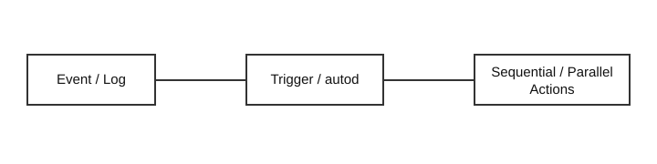

Fortinet Enterprise Networking & Security Study — 2026-09-19
Run Status — PARTIAL
The machine-readable 30-day exclusion inventory was completed before lesson generation. Twelve distinct mechanism-level lessons and exactly 50 graded MCQs were generated. One editable draw.io + SVG teaching pair was completed; 11 required diagram pairs remain incomplete, so this run is PARTIAL. Publication is not suppressed.
1. FortiGate — Automation stitches: trigger/action execution
Automation stitches bind an event trigger to actions. Current FortiOS supports sequential or parallel action execution. Sequential execution stops when an action fails; parallel execution starts actions immediately. In a Security Fabric, stitches are created on the root and can synchronize through fabric-sync. Runtime proof comes from stitch history, trigger logs and autod diagnostics, not merely the configured object. A FortiOS 7.6.7 defect illustrates the boundary: using %%action%% in an email action could crash autod, so configured intent could exist while the response never completed. Prove trigger match, variable expansion, action execution and final side effect independently.

2. FortiManager — Trusted hosts as a source-authorization boundary
Trusted hosts restrict administrator source addresses. When every administrator is restricted, FortiManager ignores administrative access from addresses outside those subnets. A recent FortiClient-update defect exposed a service-side interaction: signature requests could receive no response when all admin trusted-host lists excluded the FortiClient subnet; fixes are in 7.6.8 and 8.0.1. Verification must compare the actual source IP, trusted-host entries, packet response and update logs. A reachable FortiManager does not prove that a particular source passes this authorization boundary.
3. FortiAnalyzer — Log forwarding modes and TCP framing
Forwarding mode sends logs in real or near-real time to FortiAnalyzer, syslog, CEF or output-plugin destinations while retaining a local copy. Aggregation instead batches stored logs to another FortiAnalyzer on a schedule and requires server-side acceptance. Reliable TCP transport solves delivery reliability but does not solve message-boundary parsing. RFC 6587 receivers can require octet-counting framing. Troubleshooting therefore separates reachability, TCP establishment, logfwd queue state, filters, framing and receiver parsing. A healthy TCP socket with framing errors is not a network failure.
4. FortiSwitch — 802.1X port security versus DHCP forwarding
FortiSwitch 802.1X uses EAP between supplicant and RADIUS with the switch acting as authenticator; PEAP, TTLS and TLS are supported, and MAC-based authentication is also available. Authentication success proves access-control state only. It does not prove DHCP snooping, relay, VLAN forwarding or upstream DHCP. On 110G switches running 7.6.8, Fortinet documented a DHCP-snooping defect where DHCPDISCOVER appeared but later transaction stages failed; fixes are in 7.6.9 and 8.0.1. Establish authorization first, then trace DHCP as an independent transaction.
5. FortiAP/Wireless — 802.11ax High Efficiency and entitlement
Wi-Fi 6/802.11ax adds High Efficiency operation, target wake time and other radio improvements. With FortiEdge Cloud, enabling HE in the SSID is necessary but not sufficient: Advanced FortiAP management entitlement is required for HE to become active on the AP. This creates three validation layers—cloud intent, license entitlement and AP/radio runtime state. A client associating without 802.11ax should not be diagnosed from RF symptoms alone; verify HE intent and entitlement first.
6. FortiNAC — Device Profiler observation pipeline
Device Profiler continuously categorizes unknown endpoints. DHCP observation can create rogue hosts; profiling can use already-collected OUI/FortiGuard evidence and active NMAP/SNMP methods. Active scans without ICMP precheck are possible but can impose significant load when targets are unreachable. Methods that must read the endpoint require a current reachable IP and correct Layer-3 knowledge. A perfectly authored rule can therefore fail because prerequisite observations were never collected. Verify rogue creation, IP freshness, gateway polling, method output and rule ordering.
7. FortiNAC-F — Multi-method IoT/OT profiling
FortiNAC-F rules can combine observations and optionally register matching devices automatically. FortiGuard IoT intelligence contributes vendor/category knowledge while behavioral and active methods add network evidence. Rule order matters because broad early rules can consume devices before precise rules evaluate them. Rule confirmation can later detect that a device no longer matches its original profile and trigger notification or control. Treat profiling as correlation rather than assuming one OUI, port or signature proves identity.
8. FortiAuthenticator — EAP-TLS mutual authentication
EAP-TLS provides certificate-based mutual authentication. FortiAuthenticator can use certificate bindings or Trusted-CA mode. In Trusted-CA mode, issuer trust, validity, expiry and revocation are primary checks and per-user certificate bindings are not used; this also changes the user/group attributes available for Access-Accept. Troubleshooting must separate TLS trust, certificate-to-identity mapping, RADIUS policy selection and authorization attributes. A valid certificate chain does not automatically imply the expected VLAN or group attributes.
9. FortiPAM — Approval lifecycle versus active session enforcement
Approval profiles can contain up to three tiers and define required approvals. Approval authorizes launch; it is not identical to continuous enforcement of an already launched session. Fortinet documents revocation failing to terminate an active browser session unless Web Proxy is enabled for the target and explicit web proxy on the interface. Distinguish control-plane approval state from proxy/data-plane session state. After revocation, verify both request status and actual target-session behavior.
10. FortiSIEM — CMDB maintenance state and incident suppression
FortiSIEM CMDB is operational context, not merely inventory. Maintenance state intentionally suppresses incidents during planned work. If state becomes stale after a maintenance window ends, event collection may be healthy while expected incidents remain absent. Fortinet documents database cleanup only after confirming no valid maintenance window remains and backing up CMDB. Compare scheduler intent, device maintenance flags, maintenance mappings and rule/event flow before changing database state.
11. FortiSASE — SWG explicit proxy and SSO inspection dependency
FortiSASE SWG directs browser traffic through an explicit proxy, commonly by hosted PAC file. Endpoints need the SWG trust certificate for inspected HTTPS. Fortinet documents that an SSO-authenticated SWG policy requires deep inspection. SAML-cookie workflows depend on cookies and Origin/Referer handling, so missing inspection can surface as authentication/session-timeout failures even when proxy reachability is fine. Validate PAC selection, proxy reachability, certificate trust, policy order, SSO transaction and inspection mode separately.
12. Secure SD-WAN — Active Performance SLA and route membership
Performance SLA probes member paths and measures latency, jitter and packet loss. A failed health check can remove routes associated with an unhealthy member; recovery restores them. This differs from interface utilization. Fortinet's September 18 SNMP article explicitly distinguishes IF-MIB counter-derived utilization from Link Monitor available-bandwidth objects and SD-WAN health-check bandwidth objects. Correlate diagnose sys sdwan health-check, SLA history, event logs, route changes and application impact. A busy link and an unhealthy SLA are different states.